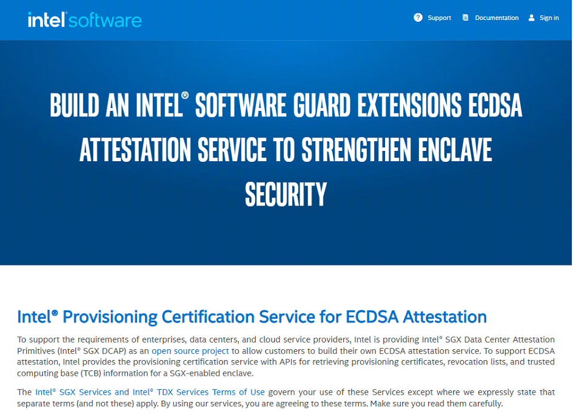
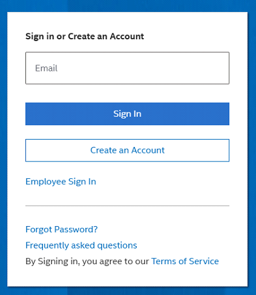
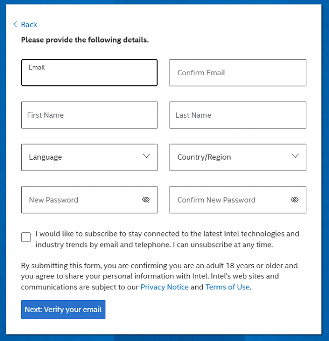
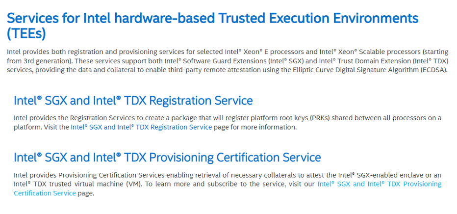
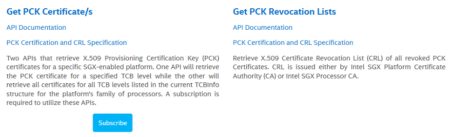
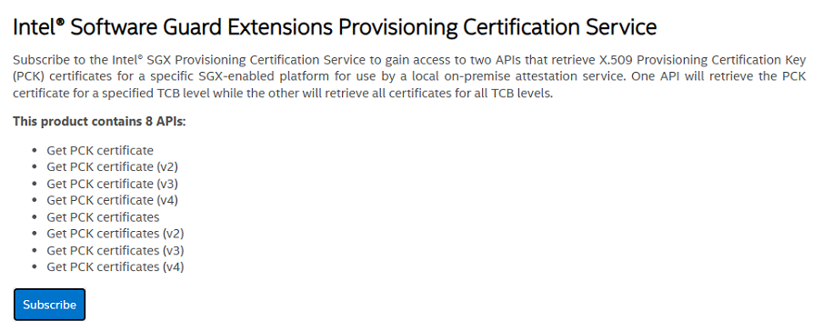
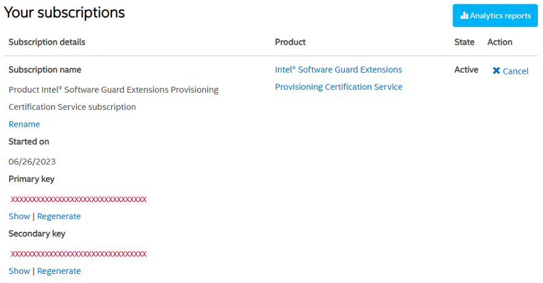
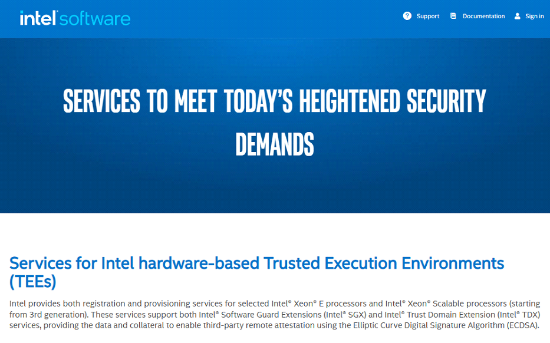

Appendix
Glossary
The following is a list of the terms used in this document. The list is not intended to be either exhaustive or precise. The terms are explained in the context of Kripta Key.
- API
Application Programming Interface: an interface that allows two or more applications to communicate with each other where, typically, one application is providing services for the others.
- audit log
a chronological record of security-relevant events and changes in the KK-Manager, to be used for post-accident audit and analysis whenever necessary.
- certificate
an electronic document or file that proves the validity of a public key.
- certificate pinning
the process where a known server certificate is distributed with a client app, requiring any connection with the server to be validated against the known copy.
- CLIKK
Kripta Key application that connects to the KK-Manager to provides interface for management services to the administrators.
- CSR
Certificate Signing Request: a request from an applicant to a certificate authority to certify that a particular public key and its parameters as valid and belonging to the applicant.
- CUD
Create, Update, Delete: a subset of commands that operate on a database that covers all operations that modify the database. Prohibiting CUD commands is effectively equivalent to only allowing read operations.
- device binding
the process where a device is associated as a credential to an application, allowing the user to use the device to authenticate.
- DR
Disaster Recovery: the process of maintaining or reestablishing vital infrastructure and systems following a natural or human-induced disaster. A KK-Manager-DR instance allows Kripta Key to continue providing service even when the main KK-Manager instance has been rendered out of service.
- dual control
an authentication method where two distinct privileged users must authorize an action simultaneously.
- E2EE
End to End Encryption: a method of securing communication such that only participating users are privy to the contents of the communication.
- ECS
Elastic Compute Service: a service that provides computing services with the ability to quickly expand or decrease resources to meet fluctuating demands.
- instance
a copy of the Kripta Key component software that is running on a machine. This term may also refer to the machine that is running a particular Kripta Key component software.
- key distribution
the process of distributing cryptographic keys from a KK-Manager to a KK-Cryptoservice.
- key generation
the process of creating cryptographic keys by using a true random generator and the appropriate algorithm.
- key rotation
the process of retiring the current key material and generating a new key material under the same key ID.
- KK
- Kripta Key
This product’s name.
- KK-A
- KK-Auditor
Kripta Key application that stores the audit logs.
- KK-CS
- KK-Cryptoservice
Kripta Key application that provides cryptographic services.
- KK-M
- KK-Manager
Kripta Key application that provides a centralized key management system for the KK-CSs.
- mTLS
Mutual TLS: A subset of TLS protocol where both the client and the server authenticates each other, instead of only authenticating the server.
- NTP
Network Time Protocol: a protocol that allows computers and devices to synchronize their clocks.
- OAEP
Optimal Asymmetric Encryption Padding: a padding scheme often used together with RSA encryption that adds randomness to a deterministic encryption scheme.
- OAEP label
an arbitrary label to be used with the OAEP scheme.
- PGP
Pretty Good Privacy: a cryptographic program that provides encryption and authentication for privacy of emails and files.
- pinned certificate
see certificate pinning.
- PKCS#11
Public-Key Cryptography Standards #11: a set of standard protocols for cryptographic tokens for interoperability.
- PKCS#12
Public-Key Cryptography Standards #12: a set of standards for the storage of keys and certificates.
- replay attack
a network attack where an attacker captures a valid message and retransmits it, tricking the system into accepting the retransmission as a legitimate message.
- REST API
Representational State Transfer API: a simple and flexible way of accessing web services by using HTTP technology.
- root provisioning key
a unique AES key which was permanently burnt by Intel in every CPU at production.
- SDK
Software Development Kit: a collection of software development tools in one installable package.
- sealing
the process of encrypting confidential data inside secure memory for storage in an insecure environment. Normally, the encrypted file may only be decrypted by the secure memory that encrypted it. However, in this context, the encrypted file may only be decrypted by the Kripta Key deployment that encrypted it.
- secure memory
a protected area created for a running program to ensure confidentiality and integrity of the executed codes. A secure memory is not accessible to privileged operating system components. In Kripta Key, a secure memory is created by using the SGX instruction set provided by an Intel-SGX capable CPU.
- SGX
Software Guard Extensions: an Intel® architecture extension designed to increase the security of selected application code and data.
- TDP
Transparent Data Protection: a mechanism of data protection that allows data to still be searched for despite being encrypted.
- TEE
Trusted Execution Environment: a secure and isolated environment that provides critical functionality for a running program that particularly requires trust or security assurance.
- TLS
Transport Layer Security: a network protocol used to secure data sent over an insecure channel.
- wrapping
the process of securing key material by encrypting it with another key.
Common Kripta Key errors
When Kripta Key encounters an error, a SNMP message will be emitted and the error will be logged. To investigate
the issue, check the SNMP message or the error log at /var/log/kriptakey/. The following list describes
common errors that may be encountered.
Error message:
APP_UNAUTHORIZEDCause: KK-Cryptoservice have not replicated the application data.
Solution:
Wait 1 minute for automatic replication to happen.
If after 1 minute this error still occurs, perform manual replication by running
sudo -u kripta kk-csd --replicate-with=/path/to/backup.db.Ensure the application certificate is correct.
Error message:
APP_IS_LOCKED_ON_PARTITIONCause: An application is locked on a particular partition.
Solution: Unlock the app using
clikk partition unlock-app.Error message: Authentication failed!
Cause: Administrator entered the wrong password.
Solution: If an administrator has forgotten the account’s password, reset it using
clikk admin reset-password. This requires dual control.Error message: Password reset can only be done by other administrators!
Cause: A regular password reset was attempted when there are only two administrator accounts.
Solution: Reset the administrator’s password using
clikk admin reset-password --with-recovery-cardsError message:
Authentication failed!
Recovery card verification failed! Here is a list of corrupted cards:
Cause: A command that requires recovery cards was executed and one of the cards is corrupted.
Solution: Regenerate the recovery cards by running
clikk kk-manager regenerate-backup-key.Error message: Please wait 30 minutes after account is locked before re-attempting login!
Cause: Too many failed login attempts in a short time.
Solution: Wait 30 minutes, or have another administrator run
clikk admin unlock.Error message:
DATABASE_TAMPEREDCause: KK-Cryptoservice’s database has been tampered or is corrupted.
Solution: Manually replicate the database by running
sudo -u kripta kk-csd --replicate-with=/path/to/backup.db.Error message:
KEY_IS_TAMPEREDCause: The key data has been tampered or is corrupted.
Solution: Manually replicate the database by running
sudo -u kripta kk-csd --replicate-with=/path/to/backup.db.Error message:
SECRET_IS_TAMPEREDCause: The secret data has been tampered or is corrupted.
Solution: Manually replicate the database by running
sudo -u kripta kk-csd --replicate-with=/path/to/backup.db.Error message: KK-Manager database has been tampered!
Cause: KK-Manager’s database has been tampered or is corrupted.
Solution: The recovery account holder must restore the database from the most recent valid backup. Afterwards, perform manual replication by running
sudo -u kripta kk-csd --replicate-with=/path/to/backup.db.Error message: KK-Cryptoservice database has been tampered!
Cause: KK-Manager’s KK-Cryptoservice instance database has been tampered or is corrupted.
Solution: The recovery account holder must restore the database from the most recent valid backup. Afterwards, perform manual replication by running
sudo -u kripta kk-csd --replicate-with=/path/to/backup.db.Error message: User data has been tampered!
Cause: KK-Manager’s user database has been tampered or is corrupted.
Solution: The recovery account holder must restore the database from the most recent valid backup. Afterwards, perform manual replication by running
sudo -u kripta kk-csd --replicate-with=/path/to/backup.db.Error message: Partition has been tampered!
Cause: KK-Manager’s partition database has been tampered or is corrupted.
Solution: The recovery account holder must restore the database from the most recent valid backup. Afterwards, perform manual replication by running
sudo -u kripta kk-csd --replicate-with=/path/to/backup.db.Error message: Key has been tampered!
Cause: KK-Manager’s key database has been tampered or is corrupted.
Solution: The recovery account holder must restore the database from the most recent valid backup. Afterwards, perform manual replication by running
kk-csd --replicate-with=/path/to/backup.db.Error message: Secret has been tampered!
Cause: KK-Manager’s secret database has been tampered or is corrupted.
Solution: The recovery account holder must restore the database from the most recent valid backup. Afterwards, perform manual replication by running
sudo -u kripta kk-csd --replicate-with=/path/to/backup.db.Error message: KK-Auditor service database has been tampered!
Cause: KK-Auditor’s database has been tampered or is corrupted.
Solution: Purge KK-Auditor’s database by running
clikk kk-auditor archive --all.Error message:
INTERNAL_KK-CS_ERRORCause: Various causes, cannot be listed exhaustively.
Solution: Check the log in
/var/log/kriptakey/, and send it to Kripta Key’s support team.Error message: Cannot connect to KK-Manager!
Cause: Network issues, or secure memory failure.
Solution: If not caused by network issues, check the log in
/var/log/kriptakey/, and send it to Kripta Key’s support team.
Performing integrity checks
Kripta Key installers and related documents are distributed to customers via email from support@klaviskripta.com. The files are protected using a PGP key. The email should also contain the Deployment ID and the Customer ID.
To check their integrity, fetch the digests for this particular version of Kripta Key on the Klavis Kripta website. Then, compute the SHA-256 hashes of the files:
On Windows, execute:
$ certutil -hashfile "filename.ext" SHA256
On Linux, execute:
$ sha256sum "filename.ext"
Alternatively, if OpenSSL is installed, execute:
$ openssl dgst -sha256 "filename.ext"
If a digest mismatch is found, the customer may request the file to be resent, either by sending an email to support@klaviskripta.com or by calling the designated contact number at www.klaviskripta.com.
Obtaining Intel API key
Since Kripta Key requires Intel® SGX, each machine must contact Intel to ensure that it runs Kripta Key on trusted environment. Prior to verifying a machine, you need to register to Intel® Trusted Services API Management Developer Portal to get the Intel API key. This key authenticates the user in the Intel Server, allowing multiple machines to use one API key. To get the API key one performs the following steps:
Go to Intel® Trusted Services API Management Developer Portal to sign up and fill in the required information.
  Verify your email by supplying the verification code and clicking create an account.
Upon successful registration, log in to your account, go to Intel SGX and Intel TDX Provisioning Certification Service.
Click subscribe on the Get PCK Certificate/s section
Click subscribe to get an API key.
You will get two keys, namely the primary and the secondary. Use either one of them as an API key. Click show to use that key.

If you have been registered to Intel® Trusted Services API Management Developer Portal and you already have an Intel API key, check your Intel API key by performing the following steps:
Go to Intel® Trusted Services API Management Developer Portal, click sign in and fill in your email and password.
Once logged in, go to your profile and click manage subscription.
The list of your Intel API keys is on that page.
Checking for SGX2 support
For systems running Linux, cpuid outputs information about the processor, including whether
SGX2 is supported or not. Run the following command:
$ cpuid | grep -i sgx
If SGX2 is supported by the processor, the command will output the following:
SGX supported = True
SNMP configuration
Setting up a SNMP server for Kripta Key is optional. However, it is strongly recommended to set up and configure the SNMP server so that critical alerts from Kripta Key can be noticed promptly.
Kripta Key supports Net-SNMP version 5.9.3.
When an error occurs, KK-Manager, KK-Cryptoservice, and KK-Auditor will send an SNMP trap message to a user-defined SNMP manager. It also includes crucial system information (CPU, memory, and disk utilization), which is sent every minute. The SNMP configuration can be set either during initialization or by running the configuration script.
To configure the SNMP object identifier, upload KLAVISKRIPTA-CUSTOM-MIB.txt to the SNMP manager.
Important
Ensure that the user registered to the SNMP manager is using SHA authProtocol and AES privProtocol.
The following line shows a simple example for SNMP user configuration:
createUser [username] SHA [authPassphrase] AES [privPassphrase] authuser log [username]
Important
Both the authentication password (authPassphrase) and the privacy password (privPassphrase)
must be at least 9 characters long.
Kripta Key directory structure
The following is the directory structure of Kripta Key.
/usr/bin
kk-ad
kk-md
kk-csd
clikk
/etc/kriptakey/
kk-ad.conf
kk-ad.xml
kk-md.conf
kk-md.xml
kk-csd.conf
kk-csd.xml
/etc/systemd/system
kk-ad.service
kk-md.service
kk-md-dr.service
kk-csd.service
/etc/systemd/system/multi-user.target.wants
kk-ad.service
kk-md.service
kk-md-dr.service
kk-csd.service
/opt/kriptakey/
kk-manager
KLAVISKRIPTA-CUSTOM-MIB.txt
kk-md
kk-md-dr.service
kk-md.rules
kk-md.service
kk-m.sh
kk-cryptoservice
KLAVISKRIPTA-CUSTOM-MIB.txt
kk-csd
kk-csd.service
kk-cs.sh
kk-auditor
KLAVISKRIPTA-CUSTOM-MIB.txt
kk-ad
kk-ad.service
kk-a.sh
CLIKK
clikk
clikk.rules
/var/log/kriptakey
/var/local/kriptakey
kk-auditor
archive
archived_audit_20230327_to_20230327_1.csv
db
kk-auditord.db
export
exported_audit_20230403_to_20230404.csv
sgxdata
42Accc9FXXXXXXXXXXXXXXXXXXXXXXXX.json
collateral_00A065XXXXXX.json
pck_cert_42Accc9FXXXXXXXXXXXXXXXXXXXXXXXX.pem
kk-manager
backup
kkm-20230407-00:21:40.backup
kkm-20230407-10:40:27-manual.backup
db
kk-managerd.db
sgxdata
42Accc9FXXXXXXXXXXXXXXXXXXXXXXXX.json
collateral_00A065XXXXXX.json
pck_cert_42Accc9FXXXXXXXXXXXXXXXXXXXXXXXX.pem
kk-cryptoservice
backup
db
kk-cryptoserviced.db
sgxdata
42Accc9FXXXXXXXXXXXXXXXXXXXXXXXX.json
collateral_00A065XXXXXX.json
pck_cert_42Accc9FXXXXXXXXXXXXXXXXXXXXXXXX.pem
txncount
615948809A5A48524A0A2F996D94C338_202303
TransactionCount_615948809A5A48524A0A2F996D94C338_20230304
/home/USER/.clikk
clikk.conf
clikk_env.conf